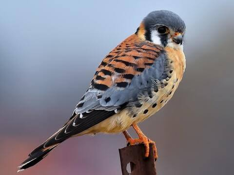

Mauritius Birds

A kestrel is a small, hovering falcon known for its distinctive hunting style in open country, preying on small mammals and insects, with the Mauritius Kestrel being a famous example, once the world's rarest bird, now a successful conservation story and Mauritius' national bird. Other types include the Common (or Eurasian) Kestrel, recognized by its hovering and distinct male/female plumage, featuring grey heads/tails in males and barred brown in females.